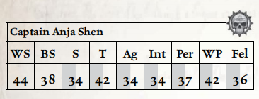

安亚·沈船长是众多在落脚港附近航线上讨生活的虚空海盗之一，她与她的舰船曾闯出过一番名声——直到它像科洛努斯扩区中许多其他舰船一样，消失得无影无踪。“敌意交易”号被裂爪阴谋团的舰船捕获并拖走，成为执政官收藏库中的又一件战利品，也为枯刃斗教的竞技场增添了一批新的奴隶，供其在短时间内取乐。
对沈和她的船员而言，被投入竞技场或许比其他任何等待他们的命运都更仁慈一些——至少在竞技场中，他们仍有一线生机，尽管渺茫，却足以让他们撑到找到逃出生天之法。安亚·沈曾躲过帝国海军的巡逻，避开竞争对手与受害者的报复，她一向以能从险境中脱身而自豪——尽管眼前的困境比往常更难破解。不过，她并非全无底牌——在她仿生手臂的隔层中藏有一枚指尖激光。她之所以尚未被迫交出它，更多是因为黑暗灵族乐于看到这个人类试图欺骗死亡的把戏，而非她自身的狡黠天赋；但她的俘获者或许恰好给了她逃脱所需的优势。

移动： 4/8/12/24 承伤： 15
护甲： 粗皮甲（手臂2，躯干2）。 总坚韧加值：3
技能： 警觉（Per），Barter（Fel），魅力（Fel），指挥（Fel）+10，商业（Fel），通用学识（帝国）（Int），通用学识（商人）（Int），通用学识（地下世界）（Int）+10，欺诈（Fel），闪避（Ag），估价（Int），禁忌学识（海盗）（Int）+10，审讯（WP），恐吓（S），调查（Fel），导航（星际）（Int）+10，航行（航天器）（Ag），学术学识（星象学）（Int），安保，巧手（Ag）+10，听说语言（低哥特语）（Int），听说语言（虚空俚语）（Int），贸易（虚空行者）（Ag）。
天赋： 权威气场，基础武器训练（通用），隐藏口袋（Concealed Cavity），堕落（Decadence），异种武器训练（指节激光），仇恨（黑暗灵族、帝国海军），钢铁纪律，麻木，浅眠，近战武器训练（原始、通用），钢铁神经，偏执，同行（罪犯），手枪训练（激光、实弹），抵抗（恐惧），迅捷打击。
武器： 单分子剑（近战；1d10+3 R；穿甲2；平衡），隐藏指节激光（手枪；3m；S/–/–；1d10+3 E；穿甲7；弹匣1；装填整轮；可靠）。
装备： 良好工艺仿生手臂（带小型隔层），3个指尖激光充电匣，一个填充了尖锐物品的安雅拉小雕像。